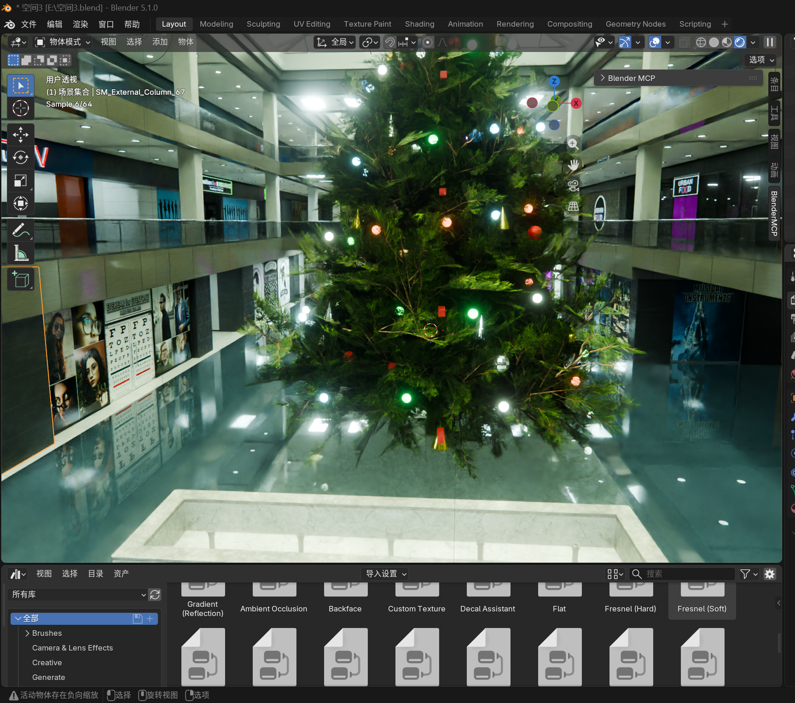
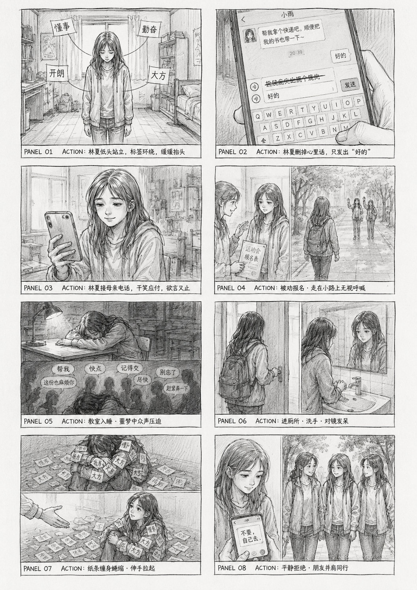
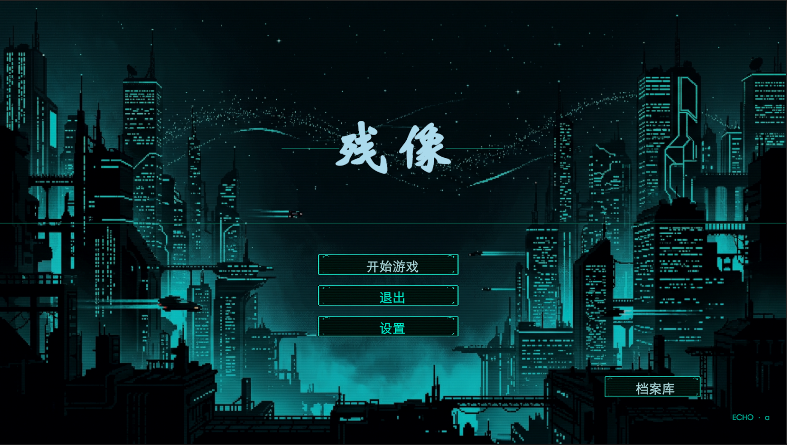
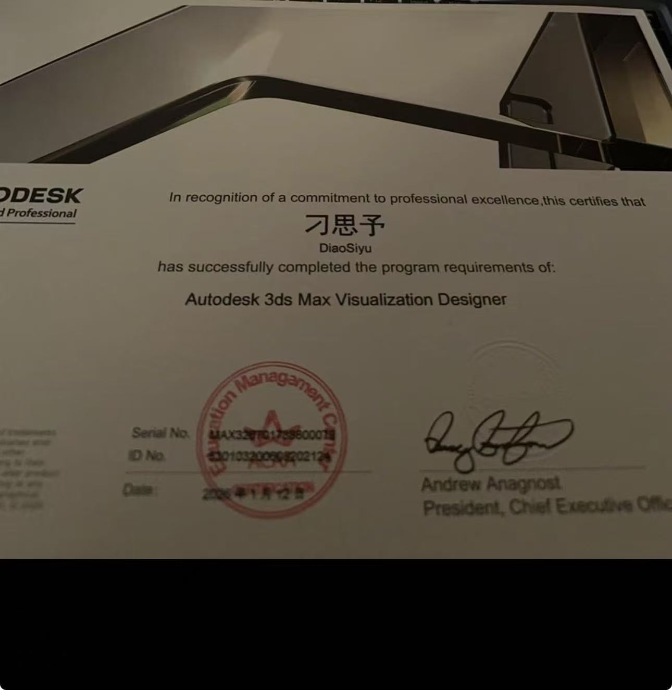
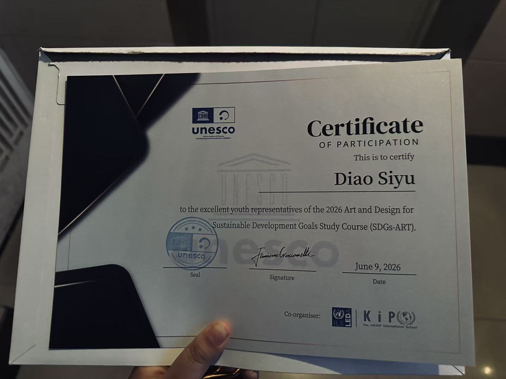

01 · Environment
游戏场景设计
进行场景概念、空间布局、关卡氛围与地编表达，使用 UE5、Blender、3ds Max 推进视觉落地。

从问卷和劳动者访谈出发，通过三段 VR 空间与实体展览，讨论公共空间中容易被忽略的劳动与空间不平等。

以高中生成长压力为题材的视觉小说，通过分支选择、压力值和动态影像建立情绪叙事。

围绕记忆与身份展开的叙事解谜体验，将像素视觉、交互线索与 AIGC 影像结合。
围绕盲盒产品完成一组平面与动态广告，展示从视觉概念、版式系统到短片输出的完整执行。
这不只是一份求职清单，也是我目前学习路径、创作经验和跨媒介能力的集中介绍。
进行场景概念、空间布局、关卡氛围与地编表达，使用 UE5、Blender、3ds Max 推进视觉落地。
使用生成式图像与视频工具完成概念探索、风格控制、素材生产和后期整合，并关注结果的可控性。
从用户流程、信息架构到界面视觉和 Figma 交互原型，建立清晰、可操作的数字体验。
使用 TouchDesigner 进行实时视觉与交互反馈，并把屏幕内容、互动逻辑和实体装置结合。
规划展览叙事、参观动线、区域功能和媒介关系，让空间本身成为信息与情绪表达的一部分。
围绕世界观完成人物设定、造型语言、服装与表情动作设计，并考虑角色和玩法、场景的统一。

完成 Autodesk 3ds Max Visualization Designer 项目要求，作为三维可视化与场景设计学习经历记录。

参与 2026 Art and Design for Sustainable Development Goals Study Course（SDGs‑ART），课程经历与《空间权利》的社会设计研究方向相关。